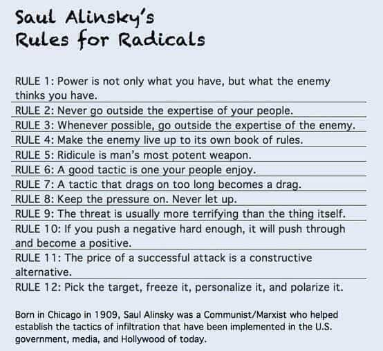

Edgar Tru is a Southern-based objectivist, natural-minded contrarian, and eleutheromania. Follow me on Gab.


Yeah! I’m fucking better than you!
This quote by Ana Kasparian, a co-host at the Young Turks, summarizes rather well the attitude of many piss-stained leftist. I once thought these cats as authentic, truth seekers, honest Abes – all terms which have laid bare how clearly inaccurate I was in my judgement.
Kyle Kulinski is another lad worth noting because, as I also used to espouse, President Trump is a “bigot.” That word alone is a line of horseshit. The meaning of the word is that you (whoever you are out there) do not tolerate another’s worldview, values, etc. Thus, you are the bigot. Anyone with a chunk of intellectuality may already foresee the fallacy that I’m about to expose. It is not possible for anyone living in society to *not* be a bigot. It is a literal contradiction.
“Hi. Are you a bigot?”
“Greetings stranger. I am not.”
“Well, Jimmy is a bigot. He thinks women shouldn’t be president.”
“Then he most certainly is a bigot.”
“But that’s his worldview. He values a woman who stays home, cooks, cleans, takes care of Little Johnny and Little Billy and blows him once a week. Do you not tolerate his values?”
“I do not. It’s bigoted.”
“. . .?”
“. . .”
“Do you fucking get irony, bro?”
The word cancels itself out. But that precise attitude when approaching terminology is lost to many folks. The word itself is nothing more than propaganda aimed to make the figure cast over with this label as immoral. And, given one takes it to its full extent, it can easily work to dehumanize and demoralize said bigot. One could claim this is lousy propaganda; however, given its effectiveness, it seems rather good.
Back in my liberal days, I danced about progressive circles—The Young Turks, Secular Talk, Think Progress, Raw Story, etc. In fact, the two former mentioned often recited news stories from sources such as the Huffington Post, the New York Times, a well-crafted echo chamber hell-bent on forming tunnel vision to its audience.
Tunnel vision creates an unbalanced worldview. An unbalanced worldview forms an unbalanced mind which, if taken fully down the block, forms a dangerous mind. One where you think you are the good guy, the contrary is the bad guy. As in, you hold the moral high-ground over that set person whom you’ve so easily stamped on the black mark of Cane. In this worldview, through the eyes of a bigot in denial, you are morally superior.
Now, I dare not claim these sorts of liberal turd monkeys actually all believe they are morally superior, but by simply observing their character, and their rhetoric, it states a pretty solid case.
Back when I was (God forgive me) a Bernie Sanders supporter, I recall a chat with an older gentlemen as we were discussing politics. I espoused that Trump was a bigot and that I’d never vote for him. In that moment, deep in the under layers of a youthful liberal mindset, I felt I was righteous. It was religious, even. I was standing up for the ‘right’ thing. To use a perhaps better term, I was standing up for morality and pushing back against bigotry – the immoral and downright detestable.
A part of me can appreciate that religious-esque quality of that time period. In the progressives circles, I was not always so adamantly for our victim-of-the-day games. It was just the right thing to do. Because, despite what many people think of me, I actually cared and owned human compassion. I wanted everyone to benefit. I see this as a reasonably positive sentiment; except, of course, it can never, nor shall it ever, manifest in full-circle within any set society.
Someone who believes another person is immoral, therefore garnering themselves the moral high-ground, may be what I’ve come to dub the ‘moral supremacist.’
The moral supremacist is most likely to come from someone like Ana Kasparian who, by force of thy government, will utilize their big-boy guns to execute their set view of morality. That is what makes them a supremacist. The willingness to stand by as force is brought down upon another (the morally inferior) through guns and rouge badges.
Now, in regards to myself, I cannot logically claim to hold any moral status above anyone else. That would bust open the whole debate about what morality is and where it comes from — religious or secular? It’s a whole damn thing for Christ sake. And, given we were to amuse the holy doctrine side of the coin, then I’d need to provide empirical evidence for that set dogma, and to which I’d have none.
On the contrary, taking humanism into account, we can merely extract that it boils down to feelings, whether the feels of the day are either positive or negative. That, in my view, would be far more suitable, if life was ever so simple. It is not. And, the stone-cold piss-and-grit truth is, not everyone benefits from being nice to everyone. That is utter bonkers.
I am not a moral supremacist. May I utilize government to my advantage even in situations where force is shoved into another’s face? Yes. The difference in terms of mindset is that I want what I want and fuck you, while my political adversary is claiming to some moral high-ground, or moral status which is above my pay grade. The difference is I’m more in step with Social Darwinism, and the contrary is a manipulative cunt-bucket.
Liberal moms in the back, enjoying the show
Manipulation is a curious little bitch. Bitch? Perhaps because women seem to naturally possess it without realizing they do it? Maybe. Maybe I’m suggesting men — especially of the liberal-minded far-left spectrum — are taking on the horrors of female qualities. Moral supremacy bounces right off manipulation because it cannot provide any tangible evidence for its claim; therefore, it aims to make those who stand in its way feel morally inferior, which either makes them back down and shut up, or aims to rally comrades against them.
Morality itself is an abstract word where a-many fine and ugly folk can take from it what they want, often being based, placed and operated through emotion.
I prefer words, at least when engaging intellectual chat, that are observable. Example would be, as it is the core of this article, morality. I look at it like this: that which is good is positive, and that which is positive is constructive, and that which is constructive furthers the human race (or self-preservation) by a variety of means, including health, safety, security and perhaps even some happiness here and there. So, to the contrary, that which is bad is negative, and that equates to being destructive, and that ties into the opposite of its opponent.
That seems an easy, understandable way to view life, if you happen to be like me. And many folks, including right-wingers, do not like this idea that morality is subjective and that we all see different things, or people or whatever else, as being either good or bad. And where it gets tricky is that, again relaying that stone-cold piss-and-grit truth, not everyone benefits.
An easy go-to example is that not everyone benefits from open borders. Not everyone benefits from Affirmative You’ve-Got-To-Be-Kidding-Me-This-Is-Still-A-Thing? Action. Not everyone will benefit from more social programs, the expansion of government, and so on.

Utilizing the term ‘moral supremacist’ is some fine means of propaganda against leftism and their overall bitched-tongue mentality. They are supremacist, in the sense of morality, and, to refer back to the beginning quote, they think they are better than you and will dominate you by force, if necessary.
Whether it’d be more taxes, limiting gun rights, open borders to third-world countries which brings in a surfing awesome tide of foreign diseases and rape and butchery — all these things are where the aggressive progressive will go to serve their new god: Humanism. Humanitarianism. Egalitarianism. Something about ‘fuck the privileged cracker.’ It’s all in their holy doctrine: “Feelings and an Open Heart for Middle Eastern Refugees.” And now Maria Ladenburger is dead. And that’s not meant in humor, but to open up another whole understanding that moral supremacist are dangerous, and people get hurt.
At the end of the day, when times of peace run their course, it’s a man-eats-man world. And I’m not willing, in this current state, to compromise with these moral supremacist dogs. I’d rather spit on the ground which they walk than give a progressive a cookie. Then it’s milk, staying at my place rent free, and fucking my woman whenever they want. Not happening.
It’d been nice to live in a country where people compromised and we got along despite our differences. The conundrum is that I want what I want and fuck you. That’s how it is now. I’m not up for being lectured to about gun deaths because some kids down in Florida had a really bad school day. If we take that approach, how about we tally all the lives saved by guns, from regular Joe The Plumber types, and see who’s dick is bigger?
I’m not interested in hearing how the right thing is to go harder on guns because it may save a Bernie-kid-wannabe from being shot up in some school in California. No offense, but isn’t one less liberal skunk muffin good for everyone? That may have been in poor taste. Some may even suggest I’m mocking the Florida school shooting and truly believe, deep down, that it’s ‘wrong.’ It isn’t. It’s bloody (did you catch that yet?) hilarious.
Just some thoughts.
Read More: 4 Benefits That Minorities Enjoy While Living In “White Supremacist” Countries